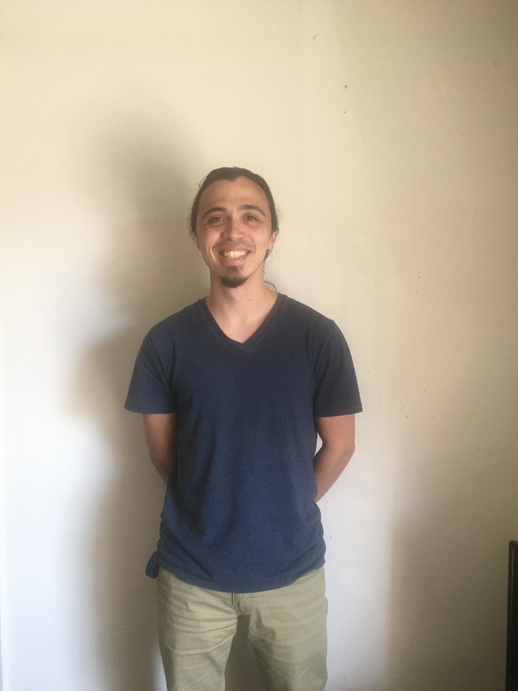

David Keating
I'm a 6th-year Ph.D. student in mathematics at UC Berkeley studying under Nicolai Reshetikhin. I am interested in statistical mechanics of two-dimensional lattice models.
CV
Contact
-
Email: (first initial)(lastname)@berkeley.edu
-
Office: Evans 935
Papers and preprints
Teaching
- Spring 2020: GSI for Math 128A "Numerical Analysis."
- Spring 2019: GSI for Math 54 "Linear Algebra and Differential Equations."
- Fall 2018: GSI for Math 54 "Linear Algebra and Differential Equations."
- Fall 2017: GSI for Math 53 "Multivariable Calculus."
- Spring 2017: GSI for Math 53 "Multivariable Calculus."
- Fall 2016: GSI for Math 54 "Linear Algebra and Differential Equations."
- Spring 2016: GSI for Math 1B "Calculus II."
- Fall 2015: GSI for Math 1A "Calculus I."
Gallery of Simulations
A
gallery of simulations of the six vertex model, tilings, etc.
Miscellaneous
-
A library for generating random tilings with Markov chain Monte Carlo on the GPU.